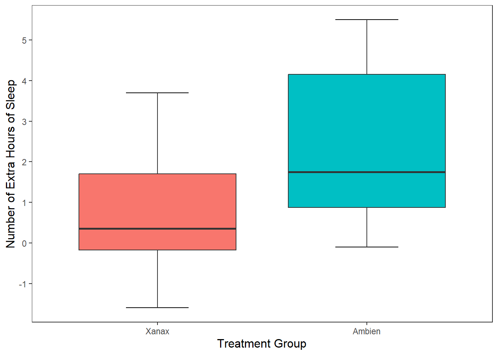
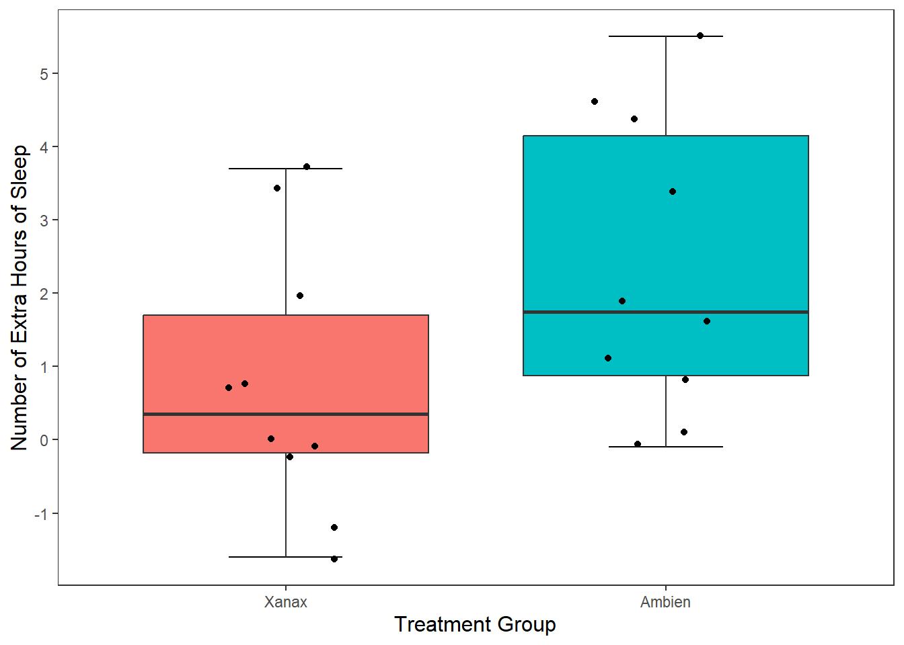
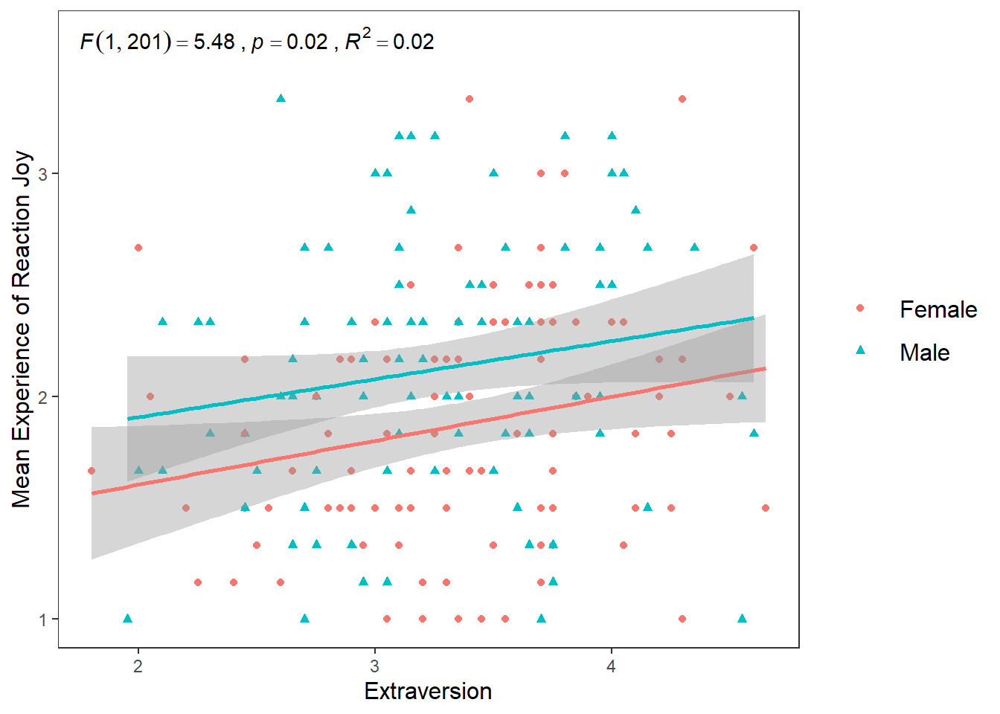
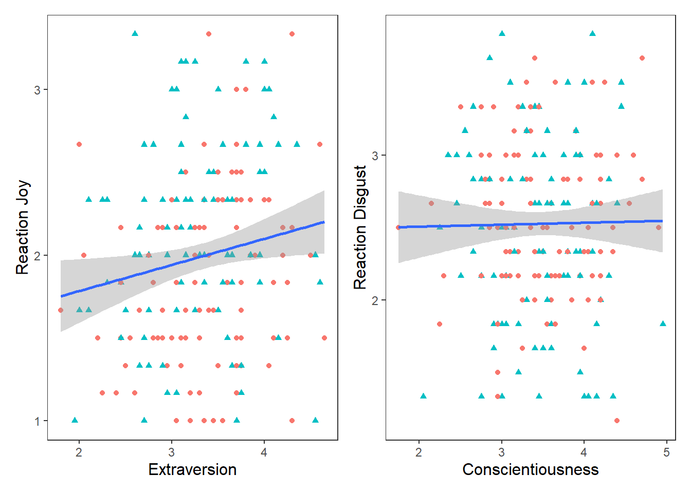
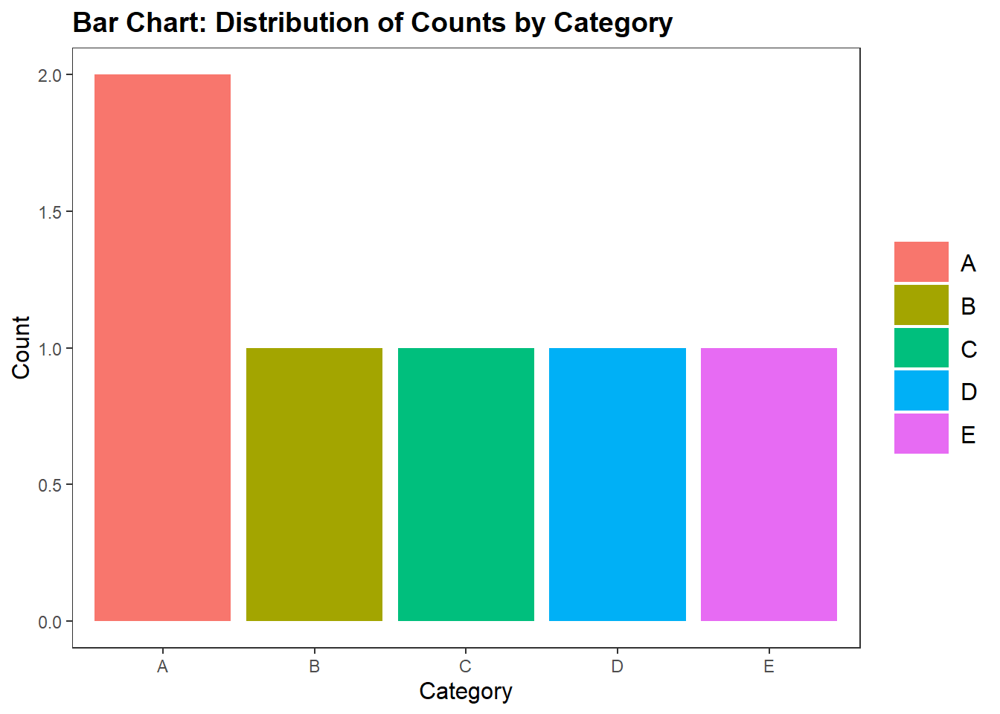
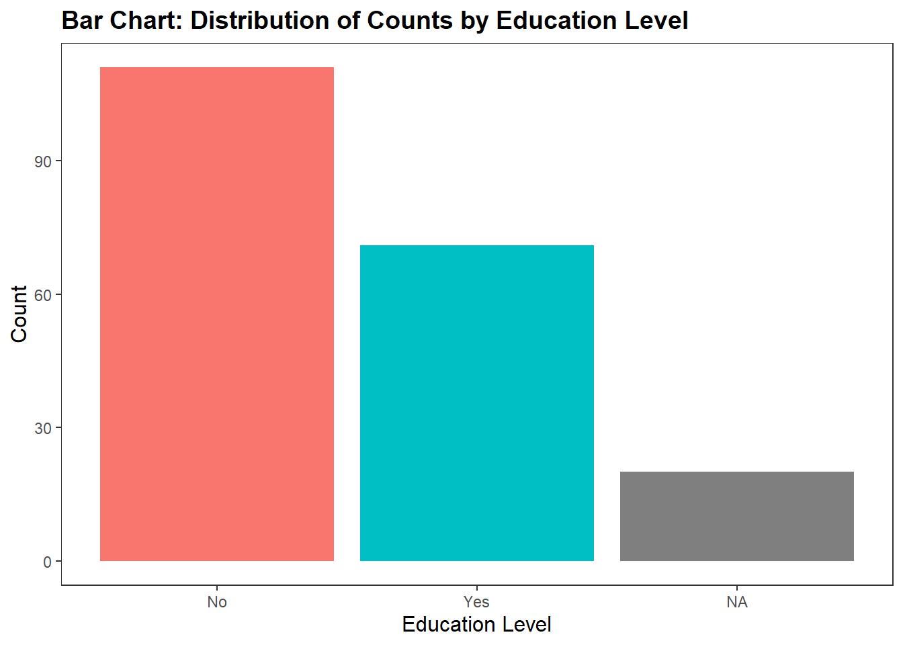
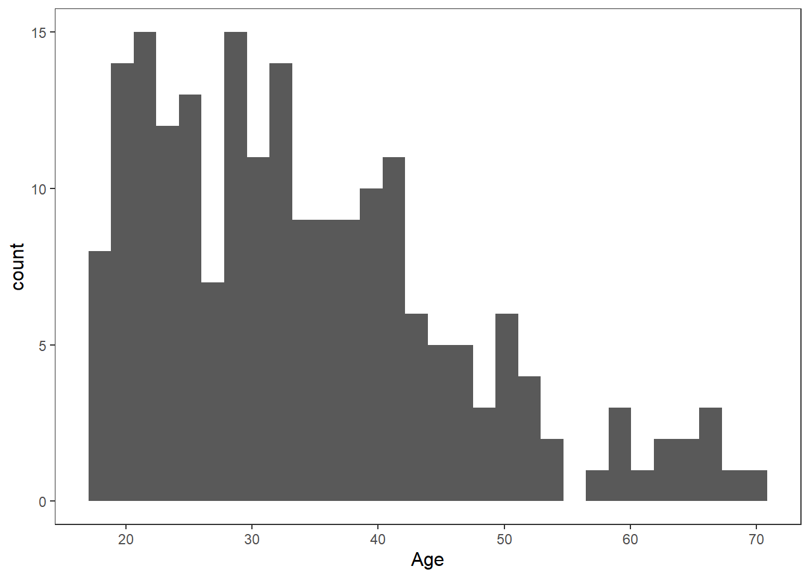

8 Data Visualisation in R
In this session, we are going to learn how to generate APA style plots in R. In particular, we are going to learn about the ggplot2 package and it’s associated function ggplot(). This package has been used to create plots for publications like the BBC and the Economist. By the end of this session you should be capable of:
- Understanding the logic of the ggplot method for drawing plots.
- Generating and customising elegant Box Plots, Violin Plots, Bar Charts, Scatterplots, Histograms, and Line Charts.
- Making your plots APA ready.
- Arranging and faceting (grouping together) your plots.
- Export your plots to PDFs.
8.1 How to read this chapter
This chapter aims to supplement your in-lecture learning about data visualization, and to build on this knowledge to show how to create visualisations in R. You’ll notice this chapter contains more R code than previous weeks. This is because a lot of our learning is about understanding the ggplot package and its usage. This chapter will be a helpful reference for your future use of this package, but at first go we recommend focusing on the activities to help you go through creating graphs step by step.
8.2 Activities
As in previous sessions there are several activities associated with this chapter. You can find them here or on Canvas under the Week 9 module.
8.3 Introduction to ggplot2
In our first session, we analysed the sleep data frame. This involved creating and exporting a plot using the base R plot() function. The code looked like this:
plot(sleep$group, sleep$extra,
xlab = "Treatment Group",
ylab = "Number of Extra Hours of Sleep",
main = "Effect of Treament on Sleep Duration")
This is a perfectly fine plot. But R is capable of making plots that are significantly nicer and elegant. This ability represents a significant advantage of using R over other programmning languages or statistical softwaere. This is thanks to the ggplot2 package and the ggplot() function.
What does the gg in ggplot stand for?
The gg stands for the Grammar of Graphics. This is because ggplot is built upon a logical system of how to draw a plot. This system involves incrementally adding layers to your plot. If you can grasp the ggplot system, you will be able to create high-quality plots quickly. Luckily, this structure is relatively straightforward to understand.
8.4 How to Draw a Plot (Box Plot)
Let’s recreate the plot we made in the first session using ggplot this time. Once we have done that, I will show you how we can make the plot even better using this function. We will be using the sleep data frame again, but I am going to call it df for short.
8.4.1 First we set up the Canvas
The first thing we do when we want to create a plot is call the ggplot() function and tell it what data frame we are using In this case, we are using the sleep data frame, that is stored in the variable df. Let’s call the ggplot() function.

This creates a grey canvas where we can draw our plot on. The default R canvas is grey, but we can change its appearance later.
Now that our canvas is set up, we will want to specify some aesthetic properties to our plot, like the y-axis and x-axis.
Now we will want to add properties to our canvas, like the x and y-axis. This properties are known as aesthetic properties in ggplot. To create them, we need tell R to map the x-axis and y-axis to variables in our data frame (e.g. df). In ggplot, there is an argument called mapping = aes() that enables this mapping. The part aes is short for aesthetics. Let’s map the group variable to the x-axis and the extra variable to the y-axis.

Now we can see that our x-axis is mapped to the two values in our group variable(1 and 2), whereas the y-axis is mapped to the range of values in the extra variable.
8.4.2 Creating our Box Plot
This sets up the structure of our canvas, the next thing we need to do is specify what type of plot we want to create. In ggplot, this means draw a geom (i.e., geometrical shape) onto our plot. There are dozens of geoms (see table at end of the chapter) that we can draw to our plot. We can even draw multiple at the same time (more on that later).
For now, we will add a single geom. Since we are creating a boxplot, we’ll add geom_boxplot

We can see that R has now drawn box plots for each of our groups. You’ll notice that we used the + operator to add these parts together. This is because we are literally adding this boxplot shape to the canvas we created earlier. Whenever you add a separate element to your graph in ggplot, we always need to use the + operator.
In terms of syntax, it should always come at the end of line of code, not at the start of a new line. If it comes at the start of a new line, R will only use the code above that line. The `+`` is there to tell R “hey hold on, I am adding more things to my graph”.

## Error:
## ! Cannot use `+` with a single argument.
## ℹ Did you accidentally put `+` on a new line?This plot is different from the plot we made in session 1. The default style in ggplot() is not to add the whiskey horizontal lines (e.g., the T) at the top and end of each boxplot. Generally, I am happy with the default option, but since we are recreating our first boxplot, let’s add these whisker lines.
To do this, we need to tell R to create a shape based on statistical properties of our data. In particular, we need to create a statistical error bar for a box plot. We can do this through adding the following line of code in our plot.
Now we have our whisker lines. The error bar lines are slightly too large for me. We can change their width within the stat_boxplot() function.
ggplot(df, mapping = aes(x = group, y = extra)) +
stat_boxplot(geom ='errorbar', width = .3) +
geom_boxplot()
8.4.3 Changing the Name of Our X-Axis and Y-Axis
Okay, our plot is looking better. The next thing we will want to do is add informative labels to our x and y-axis. We can do this by using the ggplot functions scale_x_discrete and scale_y_continous to draw our labels.
ggplot(df, mapping = aes(x = group, y = extra)) +
stat_boxplot(geom ='errorbar', width = .3) +
geom_boxplot() +
scale_x_discrete(name = "Treatment Group") +
scale_y_continuous(name = "Number of Extra Hours of Sleep")
There now we have our x and y-labels. The reason why the x-axis is discrete and the y-axis is continuous is because of the nature of the data. If we flipped the axes, then it would be scale_x_continuous and scale_y_discrete.
One thing that is bothering me is that our treatment group is labelled as 1 and 2. The sleep data frame does not provide us with any meaningful information about what these values mean. So I am going to take artistic liberties and say that 1 means Xanax and 2 means Ambien.
One approach to amend this would be to add labels to the x-axis, in scale_x_discrete().
ggplot(df, mapping = aes(x = group, y = extra)) +
stat_boxplot(geom ='errorbar', width = .3) +
geom_boxplot() +
scale_x_discrete(name = "Treatment Group",
labels = c("1" = "Xanax", #this changes the 1 in the x-axis to Xanax
"2" = "Ambien")) +
scale_y_continuous(name = "Number of Extra Hours of Sleep")
8.4.4 Changing the Look (Theme) of Our Canvas
One of the nice features of ggplot() is can change the theme of our canvas. There are several themes that we can use (see theme table at the end of the chapter). The current theme we are using is theme_gray, which is the default theme.
Since we are psychologists, we will mostly need plots in APA style. The package ggplot2 does not actually come with a pre-installed APA style. However, this is where the jtools package we installed and loaded comes in. It has an apa_theme(). Make sure that is loaded before running the following code:
ggplot(df, mapping = aes(x = group, y = extra)) +
stat_boxplot(geom ='errorbar', width = .3) +
geom_boxplot(fill = "grey") + #this will fill the inside of the boxplots with grey
scale_x_discrete(name = "Treatment Group",
labels = c("1" = "Xanax", #this changes the 1 in the x-axis to Xanax
"2" = "Ambien")) +
scale_y_continuous(name = "Number of Extra Hours of Sleep") +
theme_apa()
8.5 The Real Power of the ggplot package - Customisation
You might be wondering right now how useful is ggplot really. If you compare our two code chunks from base R and ggplot, you’ll notice that the base R approach is significantly shorter.
#base R approach
plot(sleep$group, sleep$extra,
xlab = "Treatment Group",
ylab = "Number of Extra Hours of Sleep",
main = "Effect of Treament on Sleep Duration")
#ggplot approach
ggplot(df, mapping = aes(x = group, y = extra)) +
stat_boxplot(geom ='errorbar', width = .3) +
geom_boxplot(fill = "grey") + #this will fill the inside of the boxplots with grey
scale_x_discrete(name = "Treatment Group",
labels = c("1" = "Xanax", #this changes the 1 in the x-axis to Xanax
"2" = "Ambien")) +
scale_y_continuous(name = "Number of Extra Hours of Sleep") +
theme_apa()If we are making a base plot in R, then base R is fine for the job. However, the real power of ggplot is the ability to customize our graphs to make them more striking and informative. We have seen glimpses of this already with the ability to add labels, colour, and themes to our plots. Now I am going to show you more ways we can customise our plot.
8.5.1 Mapping Aesthetic Properties (like Colour and Fill) to Our Variables
In the last section, we used the argument fill = grey to specify the colour of boxplots. If I wanted to specify different colours for each boxplot, I can use the c() function and specify each separate colour.
ggplot(df, mapping = aes(x = group, y = extra)) +
stat_boxplot(geom ='errorbar', width = .3) +
geom_boxplot(fill = c("pink", "orange")) + #this will colour the first box pink and the second box orange
scale_x_discrete(name = "Treatment Group",
labels = c("1" = "Xanax", #this changes the 1 in the x-axis to Xanax
"2" = "Ambien")) +
scale_y_continuous(name = "Number of Extra Hours of Sleep") +
theme_apa() This approach is okay if are only specifying a limited number of colours, but if there are several colours we need to specify, it is cumbersome.
This approach is okay if are only specifying a limited number of colours, but if there are several colours we need to specify, it is cumbersome.
It is okay to manually specify the colours, particularly if you have a small number of box plots. However, one of the advantages of using R is getting it to do the work for you. In particular, we can ask R to map the colour of the boxplots to specific values in our data frame.
We can do this through a similar approach used in ggplot() where we add the argument mapping = aes() to our geom_boxplot() function. This time inside the aes() argument, we specify that we want the fill (the colour inside our boxplots) to map to the variable group.
ggplot(df, mapping = aes(x = group, y = extra)) +
stat_boxplot(geom ='errorbar', width = .3) +
geom_boxplot(mapping = aes(fill = group)) + #R will automatically assign a new colour to each different value in group
scale_x_discrete(name = "Treatment Group",
labels = c("1" = "Xanax", #this changes the 1 in the x-axis to Xanax
"2" = "Ambien")) +
scale_y_continuous(name = "Number of Extra Hours of Sleep") +
theme_apa()
Luckily, R will choose colours that are visually distinct from each other. ANB you may notice that the legend labels (1, 2) are not the most informative. This is because when we relabel them on the x axis this just relabels them there. Next week we are going to learn a neater way to change the labels in the data itself.
For now, if you want to remove the legend, add show.legend = FALSE to the geom_boxplot() function.
8.5.2 Changing the Value of Our Y-Axis
I can tell R to specify the number of breaks on the y-axis. At the moment, it is only showing breaks in increments of two. R will try find a straightforward solution to the number of points on the y-axis. We can override this by using the breaks() argument in scale_y_continous, which will add a break between each number specified.
ggplot(df, mapping = aes(x = group, y = extra)) +
stat_boxplot(geom ='errorbar', width = .3) +
geom_boxplot(mapping = aes(fill = group), show.legend = FALSE) + #R will automatically assign a new colour to each different value in group
scale_x_discrete(name = "Treatment Group",
labels = c("1" = "Xanax", #this changes the 1 in the x-axis to Xanax
"2" = "Ambien")) +
scale_y_continuous(name = "Number of Extra Hours of Sleep",
breaks = c(-2:6) #this will add a break for each value between -2 and +6
) +
theme_apa() ### Changing the Orientation
### Changing the Orientation
We can also change the orientation of our graph in ggplot(). All we need to do is change the x and y values in the ggplot() call. And then we just need to change scale_y_continuous to scale_y_discrete, and scale_x_discrete to scale_x_continuous.
ggplot(df, mapping = aes(x = extra, y = group)) +
stat_boxplot(geom ='errorbar', width = .3) +
geom_boxplot(mapping = aes(fill = group), show.legend = FALSE) +
scale_y_discrete(name = "Treatment Group",
labels = c("1" = "Xanax", #this changes the 1 in the x-axis to Xanax
"2" = "Ambien")) +
scale_x_continuous(name = "Number of Extra Hours of Sleep",
breaks = c(-2:6) #this will add a break for each value between -2 and +6
) +
theme_apa()
This option is really handy if you have lots of different categorical groups and your struggling to fit your graph onto the page. Let me demonstrate with the mpg data set that is already installed when you download R.
#This first plot if really squished together on the x-axis
ggplot(mpg, mapping = aes(x = manufacturer, y = cty)) + #cty = number of cylinders
geom_boxplot(mapping = aes(fill = manufacturer))
#but if we pivot it, then it looks much nicer
ggplot(mpg, mapping = aes(x = cty, y = manufacturer)) +
geom_boxplot(mapping = aes(fill = manufacturer))
8.5.3 Plotting our Data Points in the Graph
What if I wanted to add individual data points to our graph? To provide more information on the scatter of scores? There are two options I can use. The first option is to the use the geom_point(), which will each participant’s data point to the graph. Since there are only two possible observations in the x-axis, all data points will be printed in a straight line for each observation.
ggplot(df, mapping = aes(x = group, y = extra)) +
stat_boxplot(geom ='errorbar', width = .3) +
geom_boxplot(mapping = aes(fill = group), show.legend = FALSE) +
scale_x_discrete(name = "Treatment Group",
labels = c("1" = "Xanax", #this changes the 1 in the x-axis to Xanax
"2" = "Ambien")) +
scale_y_continuous(name = "Number of Extra Hours of Sleep",
breaks = c(-2:6) #this will add a break for each value between -2 and +6
) +
theme_apa() +
geom_point() #will add individual scores onto to the graphThis is a perfectly legitimate approach to take. There is not a lot of data, so we can make our each individual point, even if there is some overlap. However, we can use another approach called geom_jitter(). This will plot each individual point just like geom_point() does, but it will add some random movement (i.e. a jitter) to each point. This can prevent overplotting of individual points.
ggplot(df, mapping = aes(x = group, y = extra)) +
stat_boxplot(geom ='errorbar', width = .3) +
geom_boxplot(mapping = aes(fill = group), show.legend = FALSE) +
scale_x_discrete(name = "Treatment Group",
labels = c("1" = "Xanax", #this changes the 1 in the x-axis to Xanax
"2" = "Ambien")) +
scale_y_continuous(name = "Number of Extra Hours of Sleep",
breaks = c(-2:6) #this will add a break for each value between -2 and +6
) +
theme_apa() +
geom_jitter() #will add individual scores onto to the graph and give them space away from each otherThe added space left or right for each data point is randomly generated. But we can reduce the upper and lower bounds of that random generation. Let’s do that for our current plot.
ggplot(df, mapping = aes(x = group, y = extra)) +
stat_boxplot(geom ='errorbar', width = .3) +
geom_boxplot(mapping = aes(fill = group), show.legend = FALSE) +
scale_x_discrete(name = "Treatment Group",
labels = c("1" = "Xanax", #this changes the 1 in the x-axis to Xanax
"2" = "Ambien")) +
scale_y_continuous(name = "Number of Extra Hours of Sleep",
breaks = c(-2:6) #this will add a break for each value between -2 and +6
) +
theme_apa() +
geom_jitter(width = .20) #will add individual scores onto to the graph and give them space away from each other
8.5.4 Adding Statistical Information to Our Plot
We can also add statistical summary information to our plot. Right now our boxplot tells us about individual scores, the median score, and the range of values. What if we wanted it to visualise the mean score treatment group?
No problem. To do this, we need to tell R to draw a geom shape in the position of the mean score. The easiest geom to do this with is geom_point().
ggplot(df, mapping = aes(x = group, y = extra)) +
stat_boxplot(geom ='errorbar', width = .3) +
geom_boxplot(mapping = aes(fill = group)) +
scale_x_discrete(name = "Treatment Group") +
scale_y_continuous(name = "Number of Extra Hours of Sleep",
breaks = c(-2:6) #this will add a break for each value between -2 and +6
) +
theme_apa() +
geom_jitter(width = .20) +
geom_point(stat = "summary", fun = "mean", size = 5, colour = "black") This draws a dot exactly where the mean value falls for both the Xanax and Ambien treatment groups fall. I changed the size of the point to make it more visible salient than the other data points.
8.5.5 Adding Text to Our Plot
We can also add the results of our t-test we ran in the first session to the plot. We do this by using the annotate() function.
ggplot(df, mapping = aes(x = group, y = extra)) +
stat_boxplot(geom ='errorbar', width = .3) +
geom_boxplot(mapping = aes(fill = group)) +
scale_x_discrete(name = "Treatment Group") +
scale_y_continuous(name = "Number of Extra Hours of Sleep",
breaks = c(-2:6) #this will add a break for each value between -2 and +6
) +
theme_apa() +
geom_jitter(width = .20) +
geom_point(stat = "summary", fun = "mean", size = 5, colour = "black") +
annotate("text",
label = "t(9) = 4.061, p = .002**.",
x = "Ambien",
y = 5.5,
hjust = 2.2,
vjust = 1,
size = 4)
8.5.6 Exporting our Plot
We can export our plot easily using the ggsave() function. Inside the function, you specify the file name. It will save the file into your working directory.
By default, this function will export the last plot that you displayed. That is why it always best this function directly underneath the plot you made in your code.
ggplot(df, mapping = aes(x = group, y = extra)) +
stat_boxplot(geom ='errorbar', width = .3) +
geom_boxplot(mapping = aes(fill = group), show.legend = FALSE) +
scale_x_discrete(name = "Treatment Group",
labels = c("1" = "Xanax", #this changes the 1 in the x-axis to Xanax
"2" = "Ambien")) +
scale_y_continuous(name = "Number of Extra Hours of Sleep",
breaks = c(-2:6) #this will add a break for each value between -2 and +6
) +
theme_apa() +
geom_jitter(width = .20) +
geom_point(stat = "summary", fun = "mean", size = 5, colour = "black") +
annotate("text",
label = "t(9) = 4.061, p = .002**.",
x = 2,
y = 5.5,
hjust = 2.2,
vjust = 1,
size = 4)
ggsave("sleep_boxplot.pdf")You should find the file sleep_boxplot.pdf in your working directory now. Open it up and have a look.
8.6 Drawing a Scatter Plot
Okay, so we talked a lot step by step how to create a box plot. Let’s talk in somewhat less detail about how to create a scatter plot. After we have covered those two charts, the rest of this chapter will serve as a reference guide for creating other charts you might be interested in making (e.g., bar charts, line charts, histograms, violin plots).
8.6.1 Context
In this study (by one Dr Ryan Donovan), they investigated the relationships between basic emotional states (Anger, Disgust, Fear, Joy, Sadness, and Surprise) and the Big Five personality traits and their sub-traits. They were interested in knowing whether personality traits make one more or less likely to a) experience certain emotions and b) be more sensitive to those emotions. To achieve this, they collected data on the personality traits along with participant’s daily experience of basic emotional states (baseline) and their reactive emotional experience after watching a series of emotionally provocative video clips (post-stimulus)
One of the hypotheses was that Extraverts are more sensitive to experiencing Joy than Introverts. Many researchers claim that one of the driving differences between Extraverts and Introverts is that Extraverts are more sensitive to experiencing positive emotion, making them more excitable and sociable. If this is true, then I would expect there to be a positive relationship between my Extraversion and Joy_reaction variables.
8.6.2 Drawing our Plot
Let’s visualize this relationship by creating a scatterplot in R. There are several steps we need to take to do this.
First, let’s call the ggplot() function, mapping Extraversion to the x-axis and Joy_reaction to the y-axis with the mapping = aes() call.
Now let’s add our geometrical shape. For scatter plots, this is our old friend geom_point().

I am happy with the x-axis, but I would like the make the y-axis look more professional. So let’s use scale_y_continous() to change its label.
ggplot(df_personality, mapping = aes(x = Extraversion, y = Joy_reaction)) +
geom_point() +
scale_y_continuous(name = "Mean Experience of Joy (Reaction)")  Let’s make our plot prettier by adding the APA theme.
Let’s make our plot prettier by adding the APA theme.
ggplot(df_personality, mapping = aes(x = Extraversion, y = Joy_reaction)) +
geom_point() +
scale_y_continuous(name = "Mean Experience of Joy (Reaction)") +
theme_apa() It’s good to provide some information on the relationship between two variables on a scatter plot. We can do this by adding a regression line that best fits their relationship. To do this in R, we add a
It’s good to provide some information on the relationship between two variables on a scatter plot. We can do this by adding a regression line that best fits their relationship. To do this in R, we add a geom called geom_smooth, where we specify the model (method) we want to fit onto our data.
ggplot(df_personality, mapping = aes(x = Extraversion, y = Joy_reaction)) +
geom_point() +
scale_y_continuous(name = "Mean Experience of Reaction Joy", breaks = c(1:5)) +
scale_x_continuous(breaks = c(1:5)) +
theme_apa() +
geom_smooth(method = lm, show.legend = FALSE)## `geom_smooth()` using formula = 'y ~ x' The function
The function geom_smooth fits a model onto our data. When you specify method = lm, this mean that you are fitting a linear regression onto your data. I also set show.legend = FALSE because it create an annoying figure that we don’t need.
Based on what we know from our previous sessions (e.g. Week 7) we compute a simple linear regression through the following code:
##
## Call:
## lm(formula = Joy_reaction ~ Extraversion, data = df_personality)
##
## Residuals:
## Min 1Q Median 3Q Max
## -1.18570 -0.39361 -0.01269 0.39017 1.45525
##
## Coefficients:
## Estimate Std. Error t value Pr(>|t|)
## (Intercept) 1.46794 0.22633 6.486 6.77e-10 ***
## Extraversion 0.15775 0.06702 2.354 0.0195 *
## ---
## Signif. codes: 0 '***' 0.001 '**' 0.01 '*' 0.05 '.' 0.1 ' ' 1
##
## Residual standard error: 0.5595 on 200 degrees of freedom
## Multiple R-squared: 0.02696, Adjusted R-squared: 0.02209
## F-statistic: 5.541 on 1 and 200 DF, p-value: 0.01955Based on our plot and our linear regression model, we can see there is a small positive relationship between Extraversion and Joy (reaction) that is statistically significant. Let’s add this information to our plot using the annote() function.
ggplot(df_personality, mapping = aes(x = Extraversion, y = Joy_reaction)) +
geom_point() +
scale_y_continuous(name = "Mean Experience of Reaction Joy", breaks = c(1:5)) +
scale_x_continuous(breaks = c(1:5)) +
theme_apa() +
geom_smooth(method = lm, show.legend = F) +
annotate("text", x = 2.5, y = 3.6,
label = "F(1, 201) = 5.48, p = .02, R^2 = 0.02")## `geom_smooth()` using formula = 'y ~ x'
While this gets the message across, it is annoying that F, p, and R are not italicised. Additionally, how can we superscript the 2 in R^2? We can use the expression() function inside label. The syntax is a bit clunky, but it will get the job done.
ggplot(df_personality, mapping = aes(x = Extraversion, y = Joy_reaction)) +
geom_point() +
scale_y_continuous(name = "Mean Experience of Reaction Joy", breaks = c(1:5)) +
scale_x_continuous(breaks = c(1:5)) +
theme_apa() +
geom_smooth(method = lm, show.legend = F) +
annotate("text", x = 2.5, y = 3.6,
label = expression(italic("F")(1, 201) == 5.48~","~italic("p") == .02~","~italic("R")^2 == 0.02))## `geom_smooth()` using formula = 'y ~ x'
That looks nice and our scatter plot is ready to be exported.
8.6.3 Customising our Scatterplot based on Gender
But before we move on, I want to show you a few other things we can do when we create scatter plots. For example, what if we were interested in checking whether the relationship between Joy (Reaction) and Extraversion was similar for both males and females? How could we visualize this?
We can map the colour of the points and their shape to the variable Gender. There are two ways we can do this, through the ggplot() function or in the geom_point(). The way you do will have ramifications for how the data visualisation will appear. It’s easier to show this than to explain. So let’s first change the colour and shape in the ggplot() function by mapping these properties to Gender.
ggplot(df_personality, mapping = aes(x = Extraversion, y = Joy_reaction, colour = Gender, shape = Gender)) +
geom_point() +
scale_y_continuous(name = "Mean Experience of Reaction Joy", breaks = c(1:5)) +
scale_x_continuous(breaks = c(1:5)) +
theme_apa() +
geom_smooth(method = lm, show.legend = F) +
annotate("text", x = 2.5, y = 3.6,
label = expression(italic("F")(1, 201) == 5.48~","~italic("p") == .02~","~italic("R")^2 == 0.02))## `geom_smooth()` using formula = 'y ~ x'This changes the colour and shape of the data points depending on whether the participant was male or female. It also adds a regression line for the male participants scores and the female participants scores. So we can see that male participants experienced more Joy than female participants during the study, but the nature of the relationship is very similar for both males and females (e.g. small positive relationship).
If we wanted to go with this approach, we could also map the appearance of the linear regression lines to Gender.
ggplot(df_personality, mapping = aes(x = Extraversion,
y = Joy_reaction,
colour = Gender,
shape = Gender,
linetype = Gender)) +
geom_point() +
scale_y_continuous(name = "Mean Experience of Reaction Joy", breaks = c(1:5)) +
scale_x_continuous(breaks = c(1:5)) +
theme_apa() +
geom_smooth(method = lm, show.legend = F) +
annotate("text", x = 2.5, y = 3.6,
label = expression(italic("F")(1, 201) == 5.48~","~italic("p") == .02~","~italic("R")^2 == 0.02))## `geom_smooth()` using formula = 'y ~ x'
The second way we can map the shape and colour aesthetics is within the geom_point() function.
ggplot(df_personality, mapping = aes(x = Extraversion, y = Joy_reaction)) +
geom_point(mapping = aes(colour = Gender, shape = Gender)) +
scale_y_continuous(name = "Mean Experience of Reaction Joy", breaks = c(1:5)) +
scale_x_continuous(breaks = c(1:5)) +
theme_apa() +
geom_smooth(method = lm, show.legend = F) +
annotate("text", x = 2.5, y = 3.6,
label = expression(italic("F")(1, 201) == 5.48~","~italic("p") == .02~","~italic("R")^2 == 0.02))## `geom_smooth()` using formula = 'y ~ x'
If you compare this plot to the previous approach, you’ll notice that the colours and shape chosen are the same. The only difference is that there is one linear regression line now for the entire data set, rather than two for male and female participants.
This difference happens because of the structure of the ggplot() package. Basically, any aesthetic properties you map in the ggplot() function will be taken into account with everything you add to the plot. So when we map shape, colour, and linetype in ggplot() to Gender, the geom_smooth() function recognizes that we want separate visualizations for male and female participants and adds seperate lines accordingly.
However, when we map aesthetic properties outside of ggplot() and in a separate geom(), this will be restricted to that geom.
To sum it up. If we map our variables to aesthetics in ggplot(), these are global changes. If we map variables to aesthetics outside of ggplot(), this will only make local changes. This ability to choose local or global changes means that the ggplot package system provides a high level of control in creating the plot we want.
8.7 Faceting
What if I wanted to create two plots. A plot for only male scores, and a plot for only female scores? Well we can use the facet_wrap() function which will make a seperate graph based on different values on a specified variable.
The syntax for facet_wrap() is: facet_wrap(~variable you are splitting the graph on)
ggplot(df_personality, mapping = aes(x = Extraversion, y = Joy_reaction)) +
geom_point(mapping = aes(colour = Gender, shape = Gender)) +
scale_y_continuous(name = "Mean Experience of Reaction Joy", breaks = c(1:5)) +
scale_x_continuous(breaks = c(1:5)) +
theme_apa() +
geom_smooth(method = lm, show.legend = F) +
facet_wrap(~Gender)## `geom_smooth()` using formula = 'y ~ x'This can be a really useful tool in data exploration when you want to see differences in relationships or effects between different categories or scores. For the purposes of brevity, I will not go into details here about how to add individual annotations to each chart, but please check out the answer given by Pedro Aphalo and Kamil Slowikowski here if you are interested in doing this.
8.8 Combining Charts
Another hypotheses I wanted to test was if there is a positive relationship between Conscientiousness and Disgust sensitivity. Previous research and some high-profile scholars have made the claim that people who are high in Conscientiousness are more likely to feel disgust, which motivates their tendency to be structured, diligent, and orderly. If this is true, then I would expect there to be a positive relationship between Conscientiousness and Disgust_reaction variable
ggplot(df_personality, mapping = aes(x = Conscientiousness, y = Disgust_reaction)) +
geom_point(mapping = aes(colour = Gender, shape = Gender)) +
scale_y_continuous(name = "Mean Experience of Reaction Disgust", breaks = c(1:5)) +
scale_x_continuous(breaks = c(1:5)) +
theme_apa() +
geom_smooth(method = lm, show.legend = F) +
annotate("text", x = 2.75, y = 4,
label = expression(italic("F")(1, 201) == 0.05~","~italic("p") == .81~","~italic("R")^2 == 0.004))## `geom_smooth()` using formula = 'y ~ x'Well that’s as a definite “NO!” that you’re going to see in a scatterplot.
If you wanted to display and export these three plots together (for the sake of it, I am going to add the box plot in here as well), you can use the patchwork package. Once it is installed, all you need to do is assign your plots to variable names, and then use the +, | and / operators together. For more information on how to use patchwork, then see this web page.
One thing to note is that you may need to change the appearance of each graph to make it easier to to combine them together. For the following graphs, I removed the legends from the scatter plots (by putting show.legend = FALSE in geom_smooth for both p1 and p2 and in geom_boxplot in p3) and changed the labels on the y-axis. Then I toyed around with their layout to find the layout that was the most informative (feel free to play around with diferent configurations)
p1 <- ggplot(df_personality, mapping = aes(x = Extraversion, y = Joy_reaction)) +
geom_point(mapping = aes(colour = Gender, shape = Gender), show.legend = FALSE) +
scale_y_continuous(name = "Reaction Joy", breaks = c(1:5)) +
scale_x_continuous(breaks = c(1:5)) +
theme_apa() +
geom_smooth(method = lm, show.legend = F)
p2 <- ggplot(df_personality, mapping = aes(x = Conscientiousness, y = Disgust_reaction)) +
geom_point(mapping = aes(colour = Gender, shape = Gender), show.legend = FALSE) +
scale_y_continuous(name = "Reaction Disgust", breaks = c(1:5)) +
scale_x_continuous(breaks = c(1:5)) +
theme_apa() +
geom_smooth(method = lm, show.legend = F)
p3 <- ggplot(df, mapping = aes(x = group, y = extra)) +
stat_boxplot(geom ='errorbar', width = .3) +
geom_boxplot(mapping = aes(fill = group), show.legend = FALSE) +
scale_x_discrete(name = "Treatment Group",
labels = c("1" = "Xanax", #this changes the 1 in the x-axis to Xanax
"2" = "Ambien")) +
scale_y_continuous(name = "Number of Extra Hours of Sleep",
breaks = c(-2:6) #this will add a break for each value between -2 and +6
) +
theme_apa() +
geom_jitter(width = .20) +
geom_point(stat = "summary", fun = "mean", size = 5, colour = "black")
p1 + p2## `geom_smooth()` using formula = 'y ~ x'
## `geom_smooth()` using formula = 'y ~ x'## `geom_smooth()` using formula = 'y ~ x'
## `geom_smooth()` using formula = 'y ~ x'
## `geom_smooth()` using formula = 'y ~ x'
## `geom_smooth()` using formula = 'y ~ x'
## Saving 7 x 5 in image
## `geom_smooth()` using formula = 'y ~ x'
## `geom_smooth()` using formula = 'y ~ x'8.9 Violin Charts
A violin plot is a method to depict the distribution of numeric data across different categories. It combines the features of a box plot and a kernel density plot, offering a more comprehensive view of the data’s distribution. To create a violin plot we use the geom_violin() function. Here is the basic syntax for creating a violin plot.
df_violin <- data.frame(
category = rep(c("A", "B", "C"), each = 100),
value = c(rnorm(100), rnorm(100, mean = 1.5), rnorm(100, mean = 2))
)
# Create a violin plot
ggplot(df_violin, aes(x = category, y = value, fill = category)) +
geom_violin(trim = FALSE,
show.legend = FALSE,
alpha = .6) +
geom_boxplot(width = 0.3,
show.legend = FALSE,
alpha = .4) +
labs(
x = "Category",
y = "Value",
title = "Violin Plot: Distribution of Values by Category"
) +
theme_apa()
Inside the geom_violin function, we specified three arguments: trim, show.legend, and alpha. If the trim argument is TRUE, then the tails of the violin plot are trimmed to match the exact range of the data. If the trim argument is FALSE, it will extend slightly past the range.
Trim - If the trim argument is TRUE (this is the default option), then the tails of the violin plot are trimmed to match the exact range of the data. If the trim argument is FALSE, it will extend slightly past the range.
Show.legend - If set to TRUE (this is the default option, then a legend will appear with the graph)
Alpha - This determines the strength of the colour, higher scores mean the violin plot will appear darker in colour.
These arguments are all stylistic choice that you can play around with when creating your own plots.
Let’s do this with the df_personality data frame. We will put Gender on the x-axis and Agreeableness on the y-axis
ggplot(df_personality, aes(x = Gender, y = Agreeableness, fill = Gender)) +
geom_violin(trim = FALSE,
show.legend = FALSE,
alpha = .6) +
geom_boxplot(width = 0.2,
show.legend = FALSE,
alpha = .7) +
labs(
x = "Gender",
y = "Agreeableness",
title = "Violin Plot: Distribution of Agreeableness by Gender"
) +
theme_apa()
8.10 Bar Chart
A bar chart is great for displaying categorical data. It consists of rectangular bars with lengths proportional to the values they represent. Bar charts are effective for comparing the frequency, count, or proportion of different categories.
df_bar <- data.frame(
category = c("A", "A", "B", "C", "D", "E")
)
# Create a bar chart
ggplot(df_bar, aes(x = category, fill = category)) +
geom_bar() + #
labs(
x = "Category",
y = "Count",
title = "Bar Chart: Distribution of Counts by Category"
) +
theme_apa()In df_personality, there is a variable called Publication. This variable captures whether participants were okay with having their recorded video and audio data potentially published in publications (for context, the participants facial expressions were recorded while they watched each video clip. After each video clip, they were asked to speak about their experiences and this was also recorded).
Let’s use a geom_bar to visualise the count for each variable.
ggplot(df_personality, aes(x = Publication, fill = Publication)) +
geom_bar(show.legend = FALSE) + #
labs(
x = "Education Level",
y = "Count",
title = "Bar Chart: Distribution of Counts by Education Level"
) +
theme_apa()
8.11 Histograms
Histograms are a type of bar plot that displays the distribution of a continuous variable. They partition the data into bins or intervals along the x-axis and then use the height of the bars to represent the frequency or density of observations within each bin.
Creating a histogram in ggplot2 is straightforward. We use the geom_histogram() function and map a continuous variable to the x-axis. Here’s an example:
# Create a histogram of a continuous variable
ggplot(df_personality, aes(x = Age)) +
geom_histogram()+
theme_apa()## `stat_bin()` using `bins = 30`. Pick better value with `binwidth`.
We can change the bin width by specify it in the geom_histogram() function. Often you might need to play around with this to get the value you want.
age_mean <- mean(df_personality$Age)
age_sd <- sd(df_personality$Age)
ggplot(df_personality, aes(x = Age)) +
geom_histogram(binwidth = 2,
colour = "white")+
labs(
x = "Age",
y = "Count"
) +
theme_apa() 
#+
stat_function(fun = dnorm,
args = list(mean = mean(df_personality$Age),
sd = sd(df_personality$Age)))## geom_function: na.rm = FALSE
## stat_function: fun = function (x, mean = 0, sd = 1, log = FALSE)
## .Call(C_dnorm, x, mean, sd, log), n = 101, args = list(mean = 34.3316831683168, sd = 12.2776294622599), na.rm = FALSE, xlim = NULL
## position_identity8.12 Line Chart
Line charts are commonly used to visualize trends over time or any continuous variable. They are particularly useful for showing how a variable changes in relation to another variable, such as time.
Creating a line chart in ggplot2 involves mapping a continuous variable to the x-axis and a dependent variable to the y-axis. Here’s an example with a dataset that comes with R called economics (type ?economics into the console to get more information about it)
# Create a line chart of a continuous variable over time
ggplot(data = economics, aes(x = date, y = unemploy)) +
geom_line(color = "red") +
labs(title = "Unemployment Rate Over Time", x = "Date", y = "Unemployment Rate") +
theme_apa() ## Making our Plots more Inclusive
We can also specify options to make sure our plots are colour-blind friendly.
ggplot(df_personality, aes(x = Gender, y = Agreeableness, fill = Gender)) +
geom_violin(trim = FALSE,
show.legend = FALSE,
alpha = .4) +
geom_boxplot(width = 0.2,
show.legend = FALSE,
alpha = .7) +
labs(#this is another approach to naming x and y-axis, only use if you do not need to change anything about the values on each axis
x = "Gender",
y = "Agreeableness",
title = "Violin Plot: Distribution of Agreeableness by Gender" #depending on APA style, you may want to remove this
) +
theme_apa() +
scale_fill_viridis_d(option = "C")The scale_fill_viridis_d() function uses colour palettes that are distinctive enough to those who suffer from colour-blind issues. There are several options in this function (A to E), feel free to change it and see which ones you like.
8.13 Summary
That wraps up our data visualisation session. Hopefully you can see the value of using R for data visualisation. There is a lot we did not cover today, as data visualisation in R could be an entire workshop series in-of-itself. There are so many cool things you can do in R, like interactive graphs, annotating/highlighting individual points, combining data sets into one visualization.
Do not feel overwhelmed by the amount we have not covered. The main challenge in ggplot is getting used to concept of drawing layers of geoms, statistical summaries, and themes to the plot. Once you do, even if you have not used a particular geom before, it will be very quick and easy to create an excellent plot quickly.
8.14 Geoms
Below are a set of geometrical shapes that you can to your plots in ggplot2.
| Geom | Description | Similar Plot |
|---|---|---|
geom_point() |
Adds points to the plot. Useful for scatter plots to visualize the relationship between two continuous variables. | Scatter Plot |
geom_line() |
Connects points with lines. Often used to represent trends or changes over time in continuous data. | Line Plot |
geom_bar() |
Displays bars representing counts or frequencies of categorical data. Useful for comparing categories. | Bar Chart |
geom_histogram() |
Similar to geom_bar(), but used for continuous data. Creates bins of data and displays bars showing frequency distribution. | Histogram |
geom_boxplot() |
Represents the distribution of a continuous variable through quartiles, median, and outliers. Useful for identifying outliers and comparing distributions. | Box Plot |
geom_area() |
Fills the area below the line in a line plot. Useful for highlighting the cumulative effect of changes in a variable over time. | Area Plot |
geom_smooth() |
Adds a smoothed line to the plot, often useful for visualizing trends or patterns in noisy data. | Trend Line |
geom_text() |
Adds text labels to the plot, allowing annotation of specific points or adding additional information. | Text Annotation |
geom_label() |
Similar to geom_text(), but adds labels with a background, making them more prominent and readable. | Labeled Text |
geom_hline() |
Draws horizontal lines across the plot, useful for highlighting specific reference points or thresholds. | Horizontal Line |
geom_vline() |
Draws vertical lines on the plot, similar to geom_hline(), but for vertical lines. | Vertical Line |
geom_polygon() |
Draws polygons based on provided coordinates, useful for creating custom shapes or highlighting areas on a plot. | Polygon Plot |
geom_errorbar() |
Adds error bars to the plot, indicating uncertainty or variability in the data. | Error Bar Plot |
geom_jitter() |
Adds random noise to points, useful for avoiding overplotting in dense scatter plots. | Jittered Scatter Plot |
geom_tile() |
Creates a heatmap by filling rectangles with color based on a continuous variable. Useful for visualizing patterns in 2D data. | Heatmap |
geom_path() |
Similar to geom_line(), but does not close the path, useful for plotting trajectories or paths. | Path Plot |
8.15 Themes
Below are a set of can apply to your plots in ggplot2.
| Theme | Description |
|---|---|
theme_gray() |
Default theme with a gray background. |
theme_bw() |
Theme with a white background and black gridlines. |
theme_minimal() |
Minimalistic theme with a light gray background and no gridlines. |
theme_light() |
Theme with a light gray background and gridlines. |
theme_dark() |
Theme with a dark gray background and white gridlines. |
theme_classic() |
Classic theme resembling base R plots. |
theme_void() |
Theme with no background, gridlines, or axis elements. |
theme_linedraw() |
Theme resembling hand-drawn plots, with a white background and black gridlines. |
theme_apa() |
Theme consistent with APA style (note: you need to have installed and loaded the jtools package to use this) |